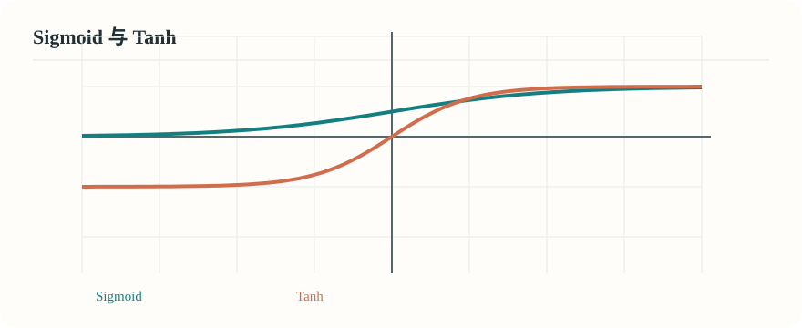
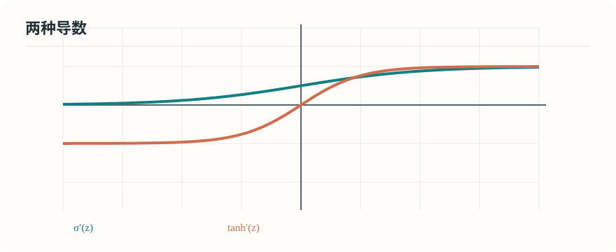
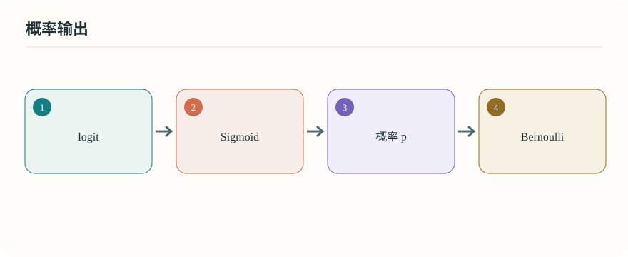
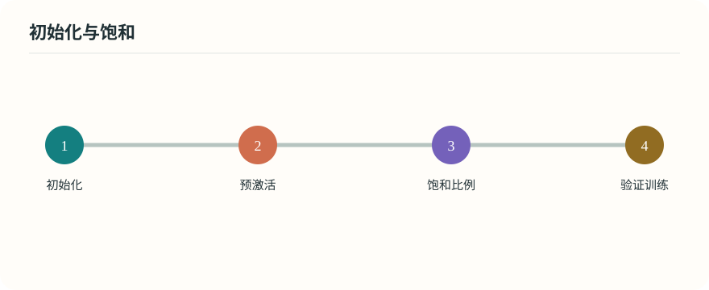

深度前馈网络 · MODULE 07
Sigmoid 与 Tanh：饱和、梯度和零中心
两个经典 S 形函数，是理解梯度消失的入口。
Sigmoid 与 tanh 都把输入压缩到有限区间；它们的输出范围、导数和适用位置各不相同。
Sigmoid 与 tanh 都把输入压缩到有限区间；它们的输出范围、导数和适用位置各不相同。
1. 输出范围不同
sigmoid 将实数映射到 (0,1)，适合表示 Bernoulli 概率；tanh 映射到 (−1,1)，输出以 0 为中心。

2. 导数在中心附近最大
sigmoid′=σ(1−σ)，最大值 1/4；tanh′=1−tanh²，最大值 1。两者在 z=0 附近最敏感。

3. 饱和区削弱梯度
输入绝对值很大时，sigmoid 和 tanh 的曲线趋近平坦，导数接近零。多层链式相乘可能使靠近输入的层得到很弱梯度；权重尺度与架构也同样重要。

4. Tanh 是缩放平移后的 sigmoid
两者满足 tanh(z)=2σ(2z)−1。tanh 的零中心输出可能让后续层接收正负都有的表示，但不能据此保证所有模型都收敛更快。
5. Sigmoid 常用于二分类输出
输出层 sigmoid 将一个 logit 转为 Bernoulli 正类概率。隐藏层 sigmoid 则不一定有概率语义，深层饱和可能削弱梯度。
6. Tanh 仍适合有界正负状态
tanh 常用于需要有界状态的结构，例如部分循环网络候选状态。它输出正负值，但在两端同样会饱和。
7. 初始化影响饱和概率
权重尺度过大时，预激活可能频繁落在饱和区。Glorot/Xavier 初始化旨在让层间信号尺度更合理，帮助缓解深层网络训练困难。
8. 选择时同时看语义与梯度
需要概率时 sigmoid 有自然解释；需要有界、零中心状态时可考虑 tanh；深层隐藏层通常先比较 ReLU 家族。最终要结合初始化、输入尺度和验证集。

交互实验
改变输入，查看输出与导数的数值变化。
交互用于核对公式与数值关系；不是完整训练基准。
可运行示例
import torch
z=torch.tensor([-6.,-2.,0.,2.,6.])
print(torch.sigmoid(z))
print(torch.tanh(z))参考资料
教材结论、论文结论与本页推导分别标注；图示为独立绘制。